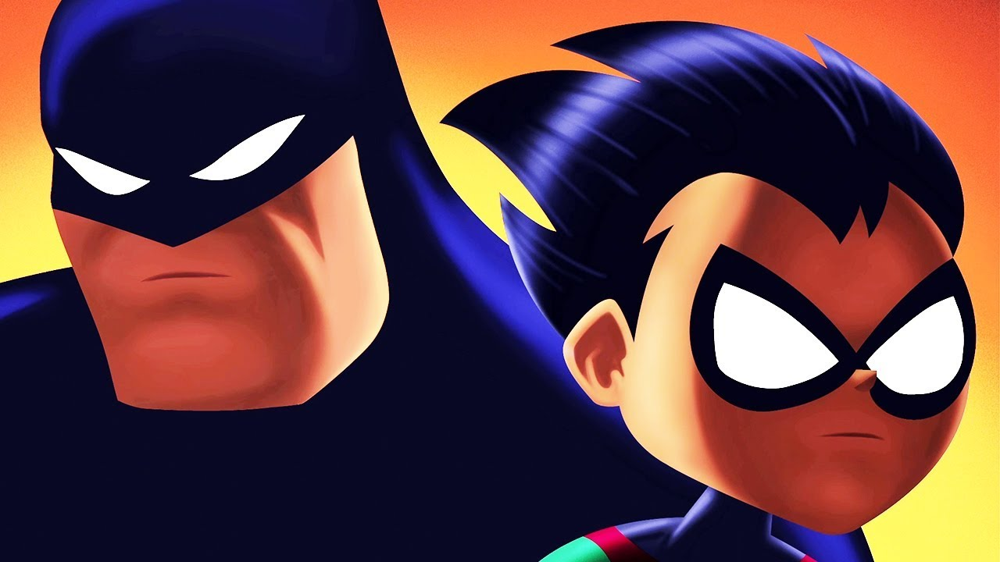

Next Event
July 17, 2018
Event in the quad u-hour with Batman bring your friends free food. Going to learn about new ai system for the bat mobile.
First Ai assistant Set to Be Released Next Month
Annoucing module JAVA_1, July 17, 2018
Event in the quad u-hour with Batman bring your friends free food. Going to learn about new ai system for the bat mobile.
END_GAME
Qwack
Launch, July 7, 2018

Call me Ishmael. Some years ago—never mind how long precisely—having little or no money in my purse, and nothing particular to interest me on shore, I thought I would sail about a little and see the watery part of the world. It is a way I have of driving off the spleen and regulating the circulation. Whenever I find myself growing grim about the mouth; whenever it is a damp, drizzly November in my soul; whenever I find myself involuntarily pausing before coffin warehouses, and bringing up the rear of every funeral I meet; and especially whenever my hypos get such an upper hand of me, that it requires a strong moral principle to prevent me from deliberately stepping into the street, and methodically knocking people’s hats off—then, I account it high time to get to sea as soon as I can. This is my substitute for pistol and ball. With a philosophical flourish Cato throws himself upon his sword; I quietly take to the ship. There is nothing surprising in this. If they but knew it, almost all men in their degree, some time or other, cherish very nearly the same feelings towards the ocean with me.
Please enjoy this website and if you have any suggestions about content or even if you just want to talk visit our contact page and send us an email.
Club meeting times

The club meets on Tuesdays and Thursdays at 12-1 for development team
The club meets on Tuesdays and Thursdays at 12-1 for Voice Assistant team